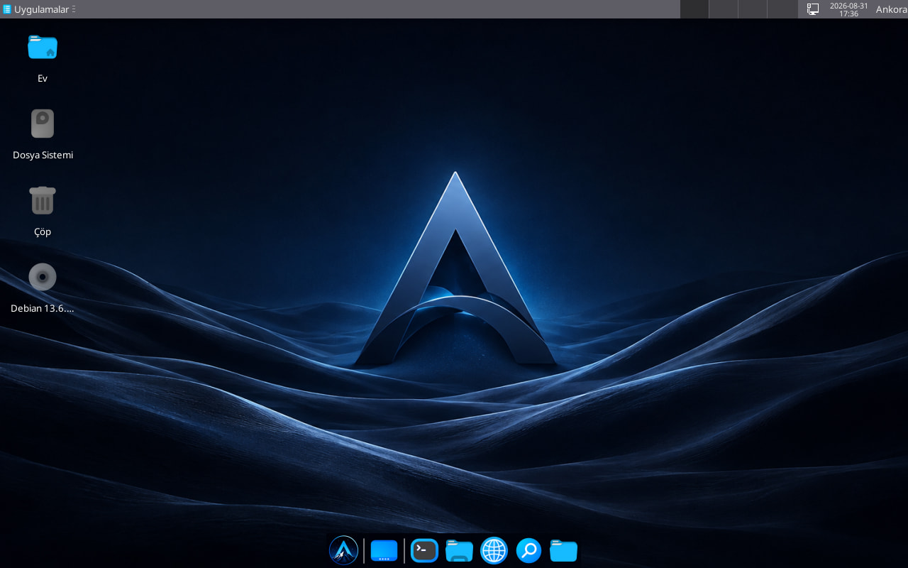
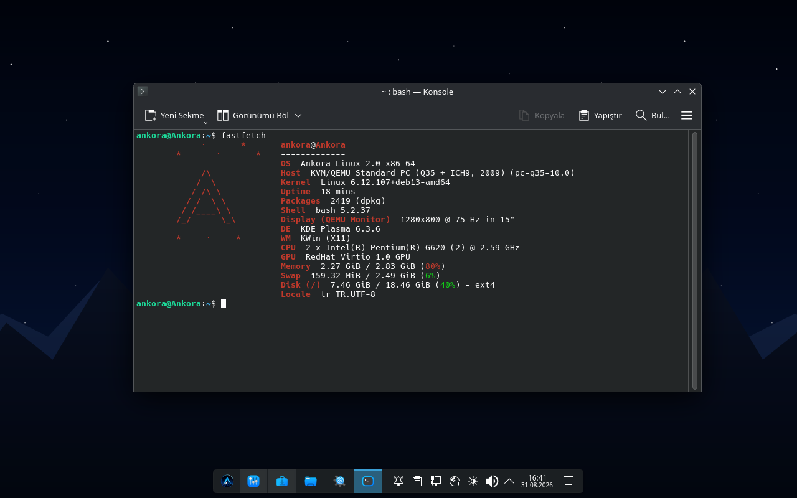

Yeni Nesil
Linux Deneyimi.
Ankora, gereksiz arka plan servislerinden arındırılmış, kendi kendine yeten yapay zekası ve ZRAM bellek mimarisiyle donatılmış, performans odaklı dağıtımdır.

ZRAM + SWAP Mimarisi
RAM içinde sıkıştırma ve kademeli bellek kullanımı sayesinde eski bilgisayarlar bile akıcı çalışır.
Yerel Yapay Zeka (Çevrimdışı)
Terminalde yardimci komutu, verilerinizi dışarı göndermeden tamamen cihazınızda çalışır.
İnce ve Optimize
Gereksiz yazılımlar ve telemetri servisleri tamamen temizlendi. ISO boyutu küçültüldü, performans artırıldı.
Ortak Masaüstü Ekosistemi
KDE ve XFCE ortamlarında çift yazılım yükünü önlemek için ortak araçlar (Dolphin) kullanılır.
Oyun Modu
GameMode ve MangoHud önceden yapılandırıldı. Oyunlarınızı takılmadan, yüksek FPS ile oynayın.
Geliştirici Dostu
Python, C/C++, Git, Zsh ve Node.js gibi modern geliştirme araçları kutudan çıkar.
Yerleşik Güvenlik Duvarı
Firewalld varsayılan olarak aktif gelir. LUKS disk şifreleme ile verileriniz güvende kalır.
Multimedya Gücü
VLC, Kodi ve tüm medya codec'leri önceden yapılandırılmıştır, anında izlemeye başlayın.

Ankora AI Debian
Debian 13 tabanlı, en stabil ve geniş donanım desteği sunan ana sürüm.
- Terminal AI Asistanı
- KDE & XFCE Masaüstü
- ZRAM + SWAP Yapısı
- GameMode Entegrasyonu
Ankora Kurumsal
Kurumlar ve işletmeler için merkezi yönetim ve uzun süreli destek (LTS) sunar.
- Merkezi Politika Yönetimi
- AppArmor / SELinux Profilleri
- Toplu Dağıtım Desteği
- Sabitlenmiş Paket Havuzu
Ankora Geliştirici
Yazılım geliştiricileri için hazır araç zinciri ve optimize edilmiş terminal.
- Python, GCC, Rust, Node.js
- Git & GitHub CLI
- Powerlevel10k Tema
- Hazır Derleyici Ortamları
ISO'yu İndirin
En güncel Ankora ISO imajını indirin.
USB'ye Yazın
BalenaEtcher veya Ventoy ile USB'ye yazın.
Canlı Ortamı Başlatın
USB'den önyükleme yaparak sistemi deneyimleyin.
Kurulumu Başlatın
Modern kurulum sihirbazını takip ederek kurun.
Çevrimdışı Çalışma
Telemetri servisleri tamamen kaldırılmıştır. Sistem, internet bağlantısı olmadan da tüm işlevlerini eksiksiz yerine getirir.
Disk Şifreleme
Kurulum sırasında LUKS ile tam disk şifreleme seçeneği sunar. Cihazınız çalınsa bile verileriniz güvende kalır.
Yerleşik Güvenlik Duvarı
Firewalld önceden yapılandırılmıştır. Sıkı güvenlik kuralları varsayılan olarak aktif gelir.
| Bileşen | Minimum | Önerilen |
|---|---|---|
| İşlemci (CPU) | 64-bit Çift Çekirdek 1.5 GHz | 64-bit Dört Çekirdek 2.0 GHz+ |
| Bellek (RAM) | 2 GB (ZRAM Aktif) | 4 GB ve üzeri |
| Depolama | 15 GB Boş Disk Alanı | 25 GB SSD Depolama |
| Ekran Kartı (GPU) | Entegre Grafik | Harici GPU (2GB VRAM) |
| Ağ | Kablolu / Kablosuz | Gigabit Ethernet |
Ankora 2.0 Zümrüt Yayınlandı
Geliştirilmiş masaüstü entegrasyonları ve çok daha hızlı bir çekirdek ile karşınızdayız.
Yerel AI Modeli Güncellendi
Yeni quantized model ile daha hızlı ve daha doğru terminal asistanı deneyimi sunuyoruz.
Kurumsal Sürüm Çalışmaları
Kurumlar için geliştirilen merkezi yönetim modülünün planlama süreci başladı.
yardimci yazdığınızda, modeliniz internet bağlantısı olmadan tamamen cihazınızda çalışır. Verileriniz dışarı gönderilmez.Hemen İndirmeye Başlayın
Ankora'nın modern deneyimini yaşayın. Sisteminizi özgürleştirin.
İletişim Bilgileri
Genel sorular ve destek için e-posta adresimizi kullanabilir veya topluluk forumuna göz atabilirsiniz.
ankoralinux@proton.me
ankalab.flarum.cloud
Mesaj Gönderin
Bu formu doldurduğunuzda e-posta istemciniz üzerinden bize ulaşacaktır.
Ankora AI Debian
Ankora AI Debian, projenin en kararlı ve geniş donanım desteği sunan ana sürümüdür. Debian 13'ün sağlam çekirdeği üzerine inşa edilen bu sürüm, günlük kullanım ve kurumsal sunucu işleri için idealdir.
Öne Çıkan Özellikler
- Kararlılık: Debian Trixie deposu üzerine inşa edilmiş, test edilmiş paket yapısı.
- Hafifletilmiş Paket Yükü: Gereksiz telemetri ve arka plan servisleri devre dışıdır.
- Terminal AI Asistanı:
yardimcikomutu ile çevrimdışı yapay zeka. - Ortak Masaüstü Yığını: KDE ve XFCE'de Dolphin ve Fairy Wren standarttır.
ankora-2.0-debian-x86_64.iso imajını indirebilirsiniz.
Ankora Kurumsal
Ankora Kurumsal; okullar, kamu kurumları ve özel işletmelerin bilgisayar parklarını tek noktadan yönetmesini sağlamak amacıyla geliştirilen özel sürümdür.
Planlanan Kurumsal Bileşenler
- Merkezi Politika Yönetimi: Kullanıcı yetkileri, güncelleme takvimleri ve istemci ayarlarının merkezden yönetilmesi.
- Genişletilmiş Güvenlik Modülleri: Sıkılaştırılmış AppArmor / SELinux profilleri ve yerel disk şifreleme standartları.
- Uzun Süreli Destek (LTS): Güncelleme kaynaklı kesintileri önleyen sabitlenmiş paket havuzları.
Ankora Geliştirici
Ankora Geliştirici sürümü, yazılım geliştiricilerin günlük kodlama, derleme ve sistem paketleme ihtiyaçlarına göre yapılandırılmış özel bir derlemedir.
Hazır Derleyici ve Araç Zinciri
- Programlama Dilleri: Python 3.x, GCC/G++, Rust, Go ve Node.js ortamları hazır kuruludur.
- Sürüm Kontrol: Git, GitHub CLI ve terminal bazlı diff araçları entegredir.
- Özelleştirilmiş Terminal: Zsh shell ve Powerlevel10k teması önceden yapılandırılmıştır.